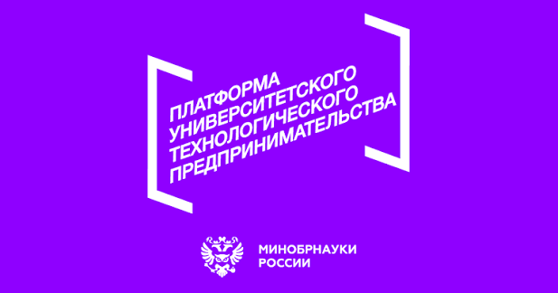

Передать экспорт
Экспортируйте личный чат из Telegram Desktop в формате JSON без медиа и выберите файл result.json в приложении.
TwoHearts_AI превращает экспорт переписки в структурированный отчет для саморефлексии. JSON обрабатывается локально в браузере и не загружается на сервер. Без диагнозов и терапевтических обещаний.
Экспортируйте личный чат из Telegram Desktop в формате JSON без медиа и выберите файл result.json в приложении.
Сервис выделяет повторяющиеся последовательности и собирает их в понятную структуру.
Пользователь видит фрагменты, наблюдения, контекст и возможные вопросы для следующего разговора.
Отчет разделяет наблюдаемые фрагменты, повторяющиеся последовательности и возможные точки внимания. Пользователь сам решает, что с этим делать.
Общая картина коммуникации: ключевые паттерны, их проявления и границы интерпретации.
Последовательности реакций и сценарии, которые встречаются в нескольких фрагментах разговора.
Темы, обстоятельства и различия в интерпретациях, важные для понимания конкретных эпизодов.
Нейтральные формулировки, которые помогают уточнить смысл, не оценивая личность собеседника.
Публичные поверхности проекта доступны для независимой проверки. Ссылки ведут к работающему сайту, приложению с локальным импортом Telegram JSON, проверке доступности сервиса, Telegram-сценарию, синтетическому отчету и исходному коду сайта. Реестр происхождения основной кодовой базы передается в отчетном пакете.
Выбранный Telegram JSON не загружается на сервер и удаляется из памяти после закрытия страницы. Для публичных примеров используются только вымышленные сообщения. Сервис показывает наблюдаемые паттерны текста и не оценивает людей.
Официальные знаки и формулировка поддержки размещены в основном содержании страницы.

Платформа университетского технологического предпринимательстваПроект выполнен при поддержке «Фонда содействия инновациям» в рамках программы "Студенческий стартап" федерального проекта «Платформа университетского технологического предпринимательства».